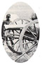
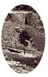
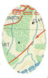

Report of Brig. Gen. Alexander McCook
Commanding, Second Division


"...few are ever observed intoxicated or
heard
using profane language." Valley Spirit, April 16, 1862
"Franklin County Soldiers in the
Great Battle at Pittsburg Landing" Valley Spirit, April 23,
1862
"Great Victory at Pittsburg Landing"
Valley Spirit, April 23, 1862
"Promoted" Valley Spirit,
April 30, 1862
Wounded at Shiloh, Valley
Spirit, April 30, 1862


Lt. Col. Housum's letter from Shiloh,
Valley Spirit, April 30, 1862

View of Peach Orchard, Shiloh Battlefield
Sketch of Shiloh Church, from John Obreiter's
History of the Regiment
Relief from Shiloh Memorial, taken from John
Obreiter's
History of the Regiment
Relief from Shiloh Memorial, taken from John Obreiter's
History of the Regiment
View of Pittsburg Landing, taken from
The Landscapes of the Civil War
The Tennessee River, taken from
Landscapes of the Civil War
Oil painting of the Battle of Shiloh, taken from
McPherson's Atlas of the Civil War
Sketch drawn on the first day of Shiloh, taken from
McPherson's Atlas of the Civil War

from The Civil War: An Illustrated History
from The Civil War: An Illustrated History
from The Civil War: An Illustrated History
from Civil War Battle Atlas